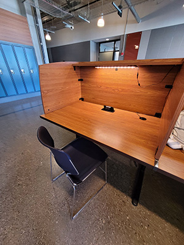
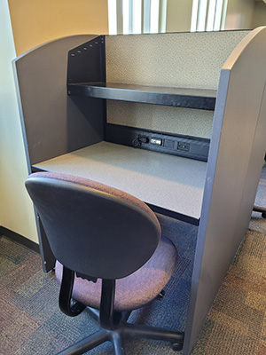
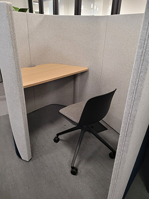

Quiet Corners in SAIT
There are many places to study on campus at SAIT, however sometimes those are unavailble due to many circumstances such as being full, loud, and too much traffic.Everyone have different preferences when it comes to finding the right place to study at, but majority of the time people look for places that is just right to study at. Here I will be listing three different places on SAIT campus that provide silence, no foot traffic and less people for less distractions.
Johnson-Cobbe Energy Centre
This study booth is located at the Johnson-Cobbe Energy Centre on SAIT Campus. This little study area in the Johnson-Cobbe Energy Centre is not crowded with large groups of students and have individual study booths with high walls that allow a distraction free environment. The lack of foot traffic and groups of students is perfect for annyone who is easily distracted by movement. This part of the building is also very quiet, which makes it easier to concentrate on any material that a student has to study and work on any assignments. The study booths also have plug ins that students could use to charge any devices and also come with lights that students could use for better visibility.
Stand Grad Centre
The study booths in the Stan Grad Centre are on the second floor near the MB classrooms. while away from the main lobby, it is still open enough to be able to pick up on the sound from the lobby. Aside from the fact that the general sounds form the main lobby can be heard from the study booths, it is also not too much to be distracting. The booths also come with charging ports and natural lighting from the windows beside it creating the perfect study space. There is not too much foot traffic, which only increases during the start of a class, or at the end of a class. The distraction levels at these study booths is more compared to Johnson-Cobbe Energy Centre even with the high walls of the study booths, however it is one of the nicer study areas with a relatively close access to the Jugo Juice on the first floor.
John Ware Building
The new study area in the John Ware Building is not packed or have too much foot traffic to be distracting. It is also close to the cafeteria in the John Ware Building which makes it perfect for any students who want to get food or any drinks after long studying sessions. The area is completely quiet and blocked off from any main areas with large gatherings of students. The study area also contains quiet booths which block out good amounts of sound from outside and keep sound from escaping the quiet booth. Inside the booths there are charging ports for plugging in an outlet and even just plugging in a cable to charge your devices. There are also screen in the quiet booths that allow students to control the lights in the booths and even the air flow.